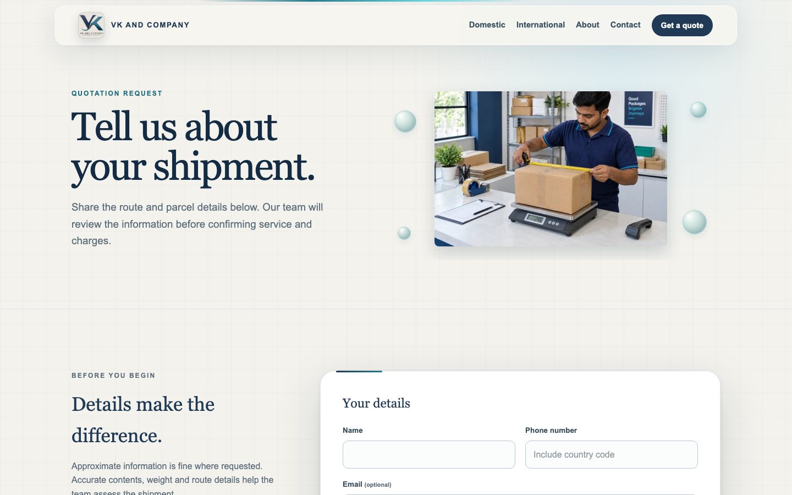
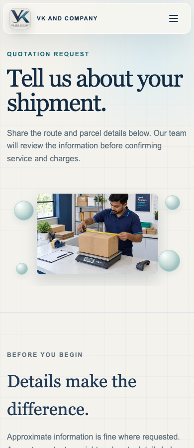

VK AND COMPANY
Photo fitting & interaction review
Local export verified at 1440, 768, 390 and 360px. No publication or real enquiry submission.
Changed files, results, reference observations and limitations · Actual Quote original (1536×1024)
Actual interaction recordings
Pointer tilt, visible teal taps and real Three.js spheres. These effects are original additions, not a claimed exact reference animation match.
Desktop — 13.8 secondsMobile — 7.16 seconds
International: complete aircraft, edge-to-edge
1440px — before / after
768px — before / after
390px — before / after
360px — before / after
Quote: photograph replaces the placeholder
1440px — before / after
768px — before / after
390px — before / after
360px — before / after
Failure and reduced-motion fallback
These fallback circles are static CSS shading, not WebGL. The photograph and form remain ordinary exported content.


See the complete verification report for original-asset provenance, source dimensions, preserved business functionality, and remaining limitations.